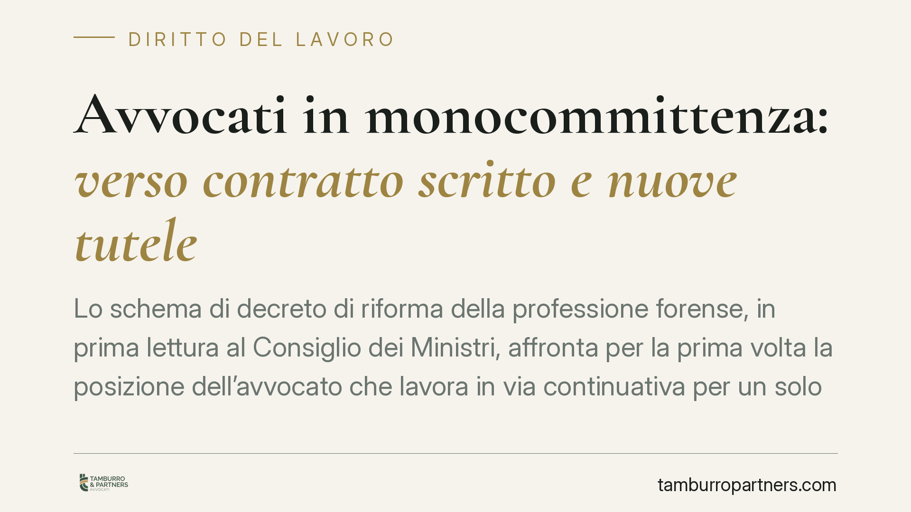

Avvocati in monocommittenza: verso contratto scritto e nuove tutele
Lo schema di decreto di riforma della professione forense, in prima lettura al Consiglio dei Ministri, affronta per la prima volta la posizione dell'avvocato che lavora in via continuativa per un solo studio. Previsti contratto scritto, compenso minimo e tutele per malattia e maternità. È una bozza: vale come indicazione di tendenza, non come adempimento immediato.

Il contesto: una bozza, non una legge
Il Consiglio dei Ministri ha approvato in prima lettura uno schema di decreto legislativo di riforma della professione forense. Tra i temi affrontati compare la monocommittenza, cioè la situazione dell'avvocato collaboratore che presta la propria attività in modo continuativo e prevalente a favore di un unico studio, società tra avvocati o associazione professionale.
Un'avvertenza preliminare è doverosa. Si tratta di uno schema in prima lettura: il testo dovrà completare l'iter (pareri e seconda deliberazione) e potrà essere modificato. Le cifre e le soglie qui richiamate derivano dalla bozza circolata e vanno considerate indicative, non definitive. L'articolo serve a prepararsi, non a conformarsi fin da ora a regole già vigenti.
Inquadramento normativo
Il punto di partenza è che la collaborazione forense resta lavoro autonomo, disciplinato dagli artt. 2222 e seguenti del codice civile (contratto d'opera). La riforma non trasforma l'avvocato collaboratore in lavoratore subordinato, né lo qualifica come collaboratore coordinato e continuativo.
Su questo punto occorre chiarezza, perché spesso si evoca l'art. 409, n. 3, c.p.c., la norma che regola le collaborazioni continuative. Il richiamo, quando compare, ha valore soltanto sistematico e analogico: serve a spiegare da dove la bozza trae ispirazione per introdurre alcune tutele (continuità, dipendenza economica). Non comporta una riqualificazione del rapporto, che rimane autonomo.
Il secondo riferimento è l'equo compenso, disciplinato dalla legge 21 aprile 2023, n. 49. La bozza àncora il compenso minimo del collaboratore ai parametri forensi, nella stessa logica: evitare retribuzioni simboliche e tutelare chi versa in condizione di dipendenza economica da un solo committente.
Il criterio che resta decisivo, al di là delle etichette, è quello elaborato dalla giurisprudenza per distinguere autonomia e subordinazione: contano gli indici concreti di etero-direzione ed etero-organizzazione, cioè il grado di assoggettamento al potere direttivo e organizzativo altrui (orari imposti, inserimento stabile nella struttura, assenza di autonomia operativa). Dove questi indici sono marcati, il rischio è che il rapporto venga riqualificato come subordinato, a prescindere dal nome del contratto.
Cosa prevede la bozza
Secondo lo schema in esame, la monocommittenza dovrebbe essere accompagnata da alcuni presidi:
- contratto scritto che definisca oggetto, durata e compenso della collaborazione;
- compenso minimo ancorato ai parametri forensi;
- rimborso delle spese sostenute per l'attività;
- sospensione del rapporto in caso di malattia, infortunio, gravidanza o maternità, con un limite massimo indicato nella bozza in 180 giorni, durante il quale è previsto il divieto di recesso da parte dello studio committente.
L'impianto riconosce la realtà di molti collaboratori: formalmente autonomi, di fatto legati a un'unica fonte di reddito.
Implicazioni pratiche
Per il collaboratore, l'eventuale entrata in vigore significherebbe maggiore trasparenza sul compenso e una rete di protezione nei periodi di sospensione dell'attività. È un riconoscimento della vulnerabilità tipica di chi dipende da un solo studio.
Per lo studio committente, la novità richiede attenzione alla gestione dei rapporti di collaborazione. Il rischio concreto non è solo quello di nuovi obblighi contrattuali, ma di riqualificazione in lavoro subordinato dissimulato là dove la collaborazione, pur definita autonoma, presenti in concreto gli indici di subordinazione sopra richiamati. In quel caso le conseguenze (contributive, fiscali, sanzionatorie) sono rilevanti.
Il tema, quindi, non è solo adeguarsi a una futura norma, ma verificare da subito la coerenza tra qualificazione formale e sostanza del rapporto.
Cosa fare in concreto
- Mappate i rapporti di collaborazione in essere, distinguendo monocommittenti e pluricommittenti.
- Verificate gli indici di autonomia: autonomia operativa, assenza di orari imposti, uso di strumenti propri, possibilità di acquisire altri clienti.
- Formalizzate per iscritto oggetto, durata e compenso, anche prima che la riforma entri in vigore: riduce le zone d'ombra.
- Allineate il compenso ai parametri forensi, documentando i criteri adottati.
- Monitorate l'iter del decreto: trattandosi di schema in prima lettura, i contenuti possono cambiare prima della versione definitiva.
Consigliamo di affrontare questa fase come un'occasione di revisione interna, non come un adempimento urgente: la riforma non è ancora legge.
Contributo informativo a cura di Tamburro & Partners Avvocati — Avv. Giuseppe Tamburro. Non costituisce parere legale.
Ogni storia di lavoro ha i suoi tempi.
Se gestisci HR e vuoi un confronto su contenzioso, ispezioni o licenziamenti, scrivi allo studio. Ti rispondiamo entro un giorno lavorativo.